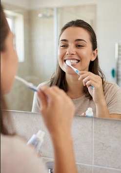
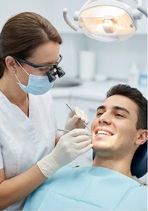
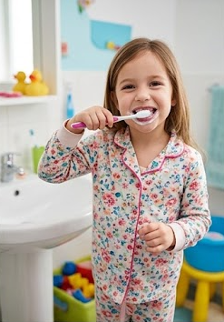
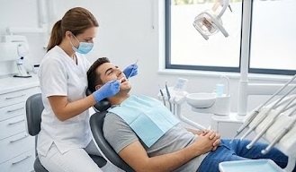

No que diz respeito à saúde da boca, a escovação e o uso do fio dental
evitam problemas muito comuns. O acúmulo da placa bacteriana e dos restos
de alimentos é o principal responsável pelo surgimento de cáries,que destroem
os tecidos dos dentes. Além disso, essa falta de limpeza causa
a gengivite, uma inflamação que provoca sangramento nas gengivas.
Se não for tratada, a gengivite pode evoluir para a periodontite,
uma infecção grave que destrói o osso que segura os dentes,
levando à perda dentária. O acúmulo de sujeira na língua e entre os dentes
também é a maior causa do mau hálito crônico.




A alimentação influencia diretamente a saúde bucal.
Consumir alimentos ricos em cálcio, como leite e
vegetais verdes, fortalece os dentes, enquanto
reduzir o açúcar diminui o risco de cáries. Beber
água com frequência também ajuda a limpar a boca
e estimular a produção de saliva, que protege
naturalmente os dentes.